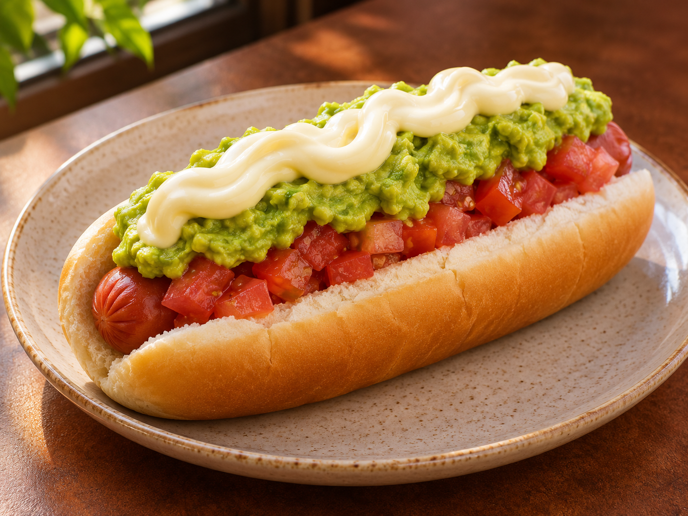
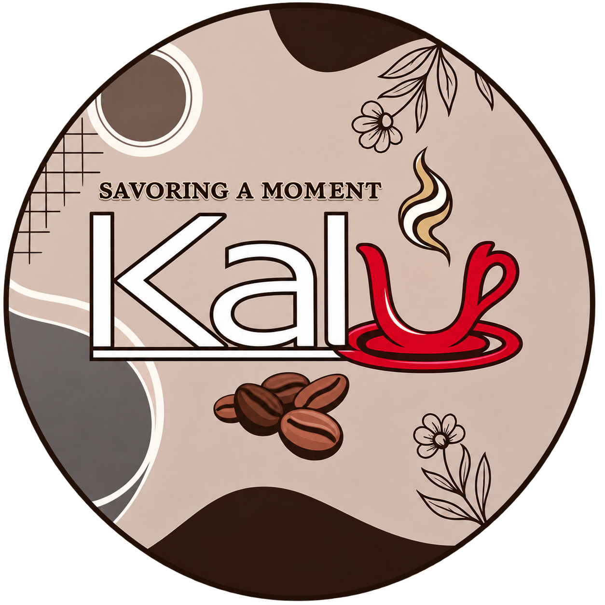
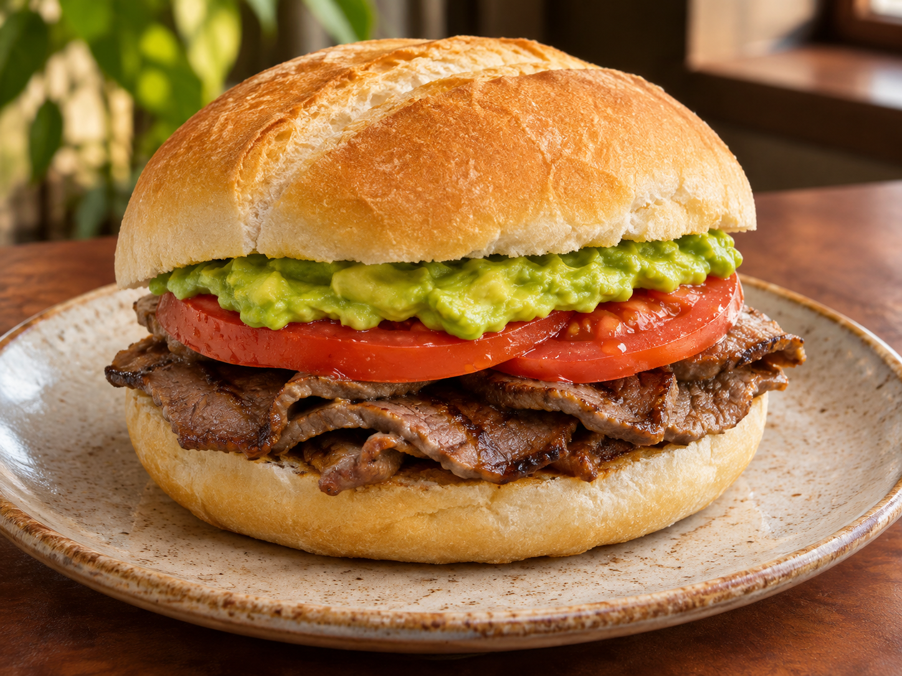
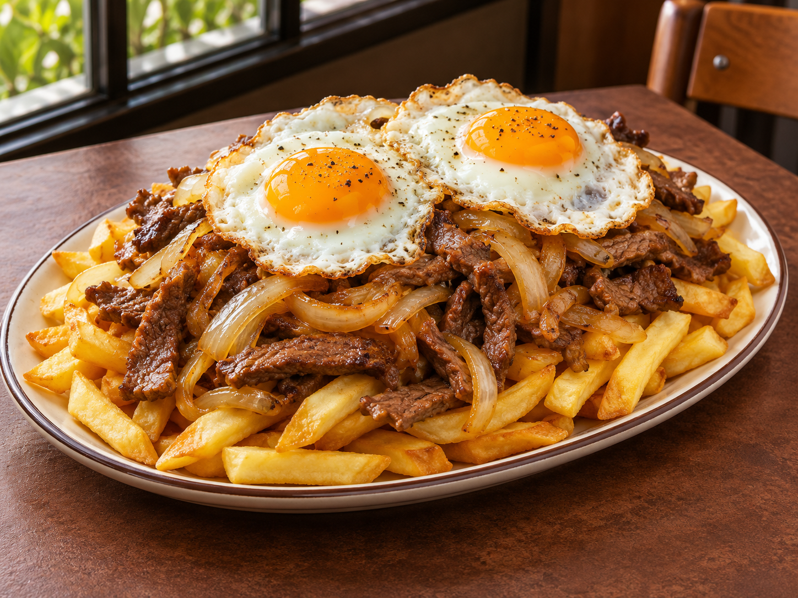

Completos italianosUn clásico para disfrutar.

KaluWaffles · Café · Comida rápidaWaffles, café y favoritos salados para disfrutar a tu manera. Bienvenido a Kalu.
Una muestra de nuestras opciones saladas. También nos encantan los waffles y el café.


